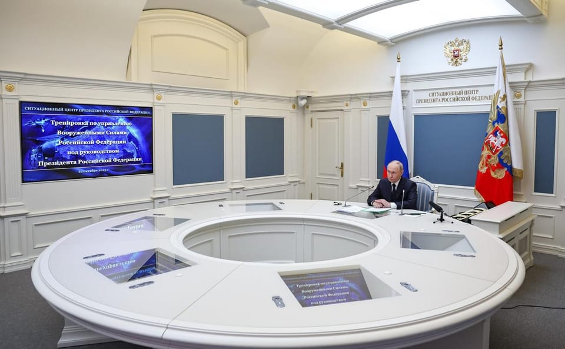

世界苦茶10月23日新闻 | 36条 | 中国重新成为德国第一大外贸伙伴

中国重新成为德国第一大外贸伙伴 | 高士早苗将努力维持印太军事存在 | 通用汽车28年推出L5自动驾驶 | 中国就稀土问题与美欧讨论
# 苦茶数据
美元兑人民币：7.12（昨日7.12，前日7.12）
美元兑日元：152.54（昨日151.78，前日151.82）
上证指数：3888（昨日3902，前日3916）
标普500指数：6699（昨日6735，前日6735）
比特币：108444（昨日108656，前日108383）
布伦特原油：64.36（昨日62.29，前日61.46）
中国新闻
• 空客在天津启用第二条A320系列飞机生产线。
空客在天津的A320系列飞机总装生产线正式投产。该生产线为天津航天产业链的重要组成，计划到2026年建成并投入运营，目标年产能达到10条生产线中的首条A320系列产线。预计到2027年，天津基地年产量将提升至75架A320系列飞机。2023年9月，天津工厂的首座装配车间竣工，占地约3万平方米，包含约13个主要工位，能够承担A319、A320和A321等机型的总装和交付检验。业内人士认为，此举将进一步巩固空客在欧洲以外的产能布局，有助于缓解全球航空市场的交付压力并延长供应链稳定性。空客方面表示，随着天津A320系列产线的投产和产能逐步释放，将有助于满足客户的交付需求。
• 大陆国台办：将邀台湾人士出席光复80周年纪念大会。
中国大陆将在10月25日前后举行台湾光复80周年纪念大会，并将邀请包括台湾民众在内的各界代表出席。大陆国台办新闻发言人朱凤莲星期三在例行记者会上，针对大陆官方会否邀请台湾嘉宾出席台湾光复80周年纪念大会时说，举行纪念大会是为了团结包括两岸民众在内的海内外中华儿女，共同铭记抗战历史，缅怀抗日先烈。朱凤莲说，纪念大会将邀请包括台湾民众在内的各界代表人士出席，大会前后还将组织参访交流活动。她也说，台湾光复是抗战胜利的重要成果，是包括台湾民众在内的全体中国人民前赴后继、浴血奋战铸就的伟大胜利，值得两岸民众共同纪念。路透社星期三引述三名外交消息人士称，大陆方面已发出邀请函。（翻評：鄭麗文會有嗎？）
• 中国国有企业为习近平的“未来之城”雄安注入活力。
随着国有企业迁入这座新兴都市，岗位随之转移——但这足以吸引劳动力吗？据地方政府，本月中化控股和中国华能集团相继正式将总部迁至雄安，各自带来约1000名员工。此前亦有其他国企入驻，包括10月迁来的京津冀铁路公司，以及去年已将总部迁至此地的中国卫星网络集团。中国电信也在雄安建设了一个产业园区，园区部分设施自2024年5月起已投入使用。该园区以研发和办公为主，最终将能同时容纳约6000名在岗员工。雄安新区于2017年在首都西南方向启动，是协调京津冀地区发展的一项重要举措。
• 卫星图像显示，中国在黄岩岛部署了新的浮动屏障。
卫星图像显示中国在黄岩岛部署新浮式障碍 一张卫星图像显示，在这一争议环礁的礁湖入口处出现了浮式障碍，该海域近年来北京与马尼拉的紧张局势不断加剧。图像由总部位于乌拉圭蒙得维的亚的地理空间公司Satellogic获得。“新的卫星影像显示中华人民共和国在黄岩岛口安装了非法浮式障碍，”美国卫星数据应用公司SkyFi的首席执行官兼联合创始人卢克·费舍尔在社交媒体上写道。尚不清楚该障碍何时安装，但分析高分辨率影像的海事安全专家，SeaLight透明度项目主任雷·鲍威尔在社交媒体上称，该图像为10月8日拍摄。鲍威尔表示，这并非中国首次在该争议浅滩设置浮式障碍。
• 当硅谷陷入对中国的痴迷和羡慕。
在硅谷领袖和关注政策的民主党人当中弥漫着一种对中国的痴迷情绪，混杂着好奇、焦虑与羡慕。长期以来关于中国的固有认知正被重新评估。曾被斥为抄袭者的中国企业如今突然成为研究效率与规模的典范；中国自上而下的国家主导体制也不再被视为政治上的不利因素，反而被重塑为高效执行的典范。无论是将中国视为作弊者还是巨无霸，这两种叙事都是对复杂现实的简化反应。然而，它们的盛行揭示了美国人深层的心理状态——当这个国家正艰难适应一个不再以自己为唯一技术进步来源的世界。
• 中国风电企业目标在2026—2030年将装机规模翻一番。
中国风电企业目标在未来五年将新增风机装机翻一番 中国风电产业——已是世界领先——设定目标，力争在2026至2030年期间每年新增风机装机至少120吉瓦。根据国家能源局数据，这一目标是2020至2024年中国年均新增装机约60吉瓦的两倍。该行业有完成宏大目标的历史。2020年，行业曾设定在2021至2025年期间每年新增装机50吉瓦的目标——这一目标已被超额完成，推动企业把目标定得更高。周一发布的声明还设定了到2030年将中国风电累计装机容量提高到1300吉瓦的目标。能源局数据显示，截至8月，中国风电累计装机容量为580吉瓦。声明称：“中国丰富的风能资源为发展提供了巨大潜力”。
印太新闻
• 高市早苗拟向特朗普强调日本防卫决心。
高市早苗拟向特朗普强调日本防卫决心 2025年10月22日日本新任首相高市早苗周三表示，日本计划在美国总统特朗普下周访问东京时展现其进一步加强国防建设的决心，以迅速适应不断变化的战争现实和该地区日益加剧的紧张局势。预计特朗普将于下周二与日本首相高市早苗举行会谈。昨天，高市早苗正式走马上任，她是日本史上首位女首相。高市过去几周大部分时间都深陷国内政治纷争，上任后几天内又将面临重大外交考验——特朗普的来访和两次地区峰会。
• 日本三大银行将联合发行稳定币。
日本三大银行将联合发行稳定币 2025/10/22 三菱UFJ银行等日本三大银行将联合发行与日元、美元等法定货币价值挂钩的稳定币。首先将在三菱商事的资金结算中投入使用。拥有超30万家主要交易对象的三大银行携手合作，旨在推动稳定币在日本普及。稳定币并非日元、美元等纸币或硬币形态，而是一种在网上使用的数位支付方式。为了保持稳定币的价值，作为担保资产，发行方持有存款及国债。三大银行将统一稳定币的标准，使其可用于企业内部和企业之间的结算。通过使用区块链技术，来实现低成本结算。三菱UFJ银行，三井住友银行，瑞穗银行将首先构建可按相同标准相互兑换的企业法人用稳定币框架。设想先发行日元稳定币。
• 韩国称朝鲜向其东部海域发射了一枚弹道导弹。
朝鲜在特朗普亚洲行前试射弹道导弹 首尔 — 朝鲜周三进行了五个月来的首次弹道导弹试射，距离美国总统唐纳德·特朗普和其他领导人预计在韩国会晤仅数日。韩方军方表示，探测到多枚从平壤以南地区发射的短程弹道导弹，向东北方向飞行约350公里。联合参谋本部未公布更具体的飞行细节，但称导弹未落入海中。联合参谋本部补充说，基于与美国牢固的军事同盟，韩军随时准备击退朝鲜的任何挑衅。日本新任首相高市早苗对记者表示，东京正与华盛顿和首尔密切沟通，包括共享实时导弹预警数据。朝鲜暂未对本次发射发表评论。
科技新闻
• 通用汽车将于2028年推出免视驾驶功能。
拥有百年历史、在昂贵现代化改造上屡屡受挫的通用汽车，计划为美国人提供免提驾驶并在行驶中观看电影的自由。周三在纽约，通用高管公布了一项新的技术计划，并宣布将于2028年开始提供新的“离眼”驾驶技术。该车企表示，该计划还包括将于明年导入车辆的对话式人工智能技术。“想象一下，你走进车内，按下一个按钮，它就把你送到办公室。你补办公事，发邮件，或观看一集你喜欢的剧集。”通用首席执行官玛丽·芭拉说，“车把你放下后，它去取你的干洗，外卖，然后及时回来，这样你就能开车送孩子去踢足球。
• Electrek：特斯拉Autopilot的安全数据正在恶化。
特斯拉最新发布了自动驾驶辅助系统的安全报告，虽然依旧存在误导性表述，但有一点很明确：数据正在变差。特斯拉一直都未公布任何能有效证明高级驾驶辅助系统，包括Autopilot和“全自动驾驶”）安全性的数据。特斯拉唯一公开的信息，是每季度的“自动驾驶安全报告”。报告内容仅包括启用Autopilot功能的特斯拉车辆，在发生一起事故前所行驶的平均里程，并将其与启用Autopilot技术的特斯拉车辆数据，以及全美车辆的平均事故间距做对比。
• 一段关于爱尔兰总统候选人的深度伪造视频震动了竞选活动。
爱尔兰总统选举运动被一段由人工智能生成的深度伪造视频扰乱，视频中候选人凯瑟琳·康诺利宣布她“退出”竞选。“我非常遗憾地宣布撤回我的候选资格并结束我的竞选活动，”视频中一个伪造的康诺利声音这样说，该视频在社交媒体平台上流传，并被爱尔兰国家广播公司RTÉ保存。完整版视频模拟了RTÉ的新闻报道、新演播室，并以深度伪造手法再现了主持人莎朗·妮·贝奥莱因和政治记者保罗·坎宁安，宣布退出并讨论其可能影响。
• SpaceX称已切断对缅甸诈骗窝点的星链服务。
埃隆·马斯克的 SpaceX 表示，已切断缅甸诈骗团伙使用的 2,500 多台 Starlink 卫星通信终端的连接。据悉，在泰缅边境有 30 多个此类窝点在运作，来自全球的人被贩运到这些地方并被强迫从事诈骗活动，每年产生数百亿美元的非法收益。Starlink 业务运营负责人劳伦·德雷耶在宣布此举时表示，公司在罕见发现违规行为时会采取行动。此次停服发生在周一缅甸军方接管最大窝点之一的 KK Park 之后，军方正在收复过去两年被叛乱组织夺去的部分领土。活动人士长期警告称。
• 你以为周一的网络中断已经够糟了。
周一的亚马逊云服务故障——以及由此引发的全球性扰动——凸显了互联网对少数核心基础设施提供商的高度依赖。如果人工智能在未来几年像科技巨头所宣称的那样成为工作和日常生活的核心，这类故障的后果只会更加严重。周一的故障短暂阻碍了部分人预约医生和访问银行服务。但如果故障导致医生依赖的诊断AI工具瘫痪，或企业用于促成金融交易的AI系统失效，又将如何？这在今天或许仍是个假设情形，但科技行业正承诺快速向由AI“代理”代表人类完成更多工作转变——这可能使企业，学校，医院和金融机构更依赖云端服务。麦肯锡公司在五月发布的一项对近1500家企业的全球调查发现，78%的受访者已在至少一项业务职能中使用AI。
• 八百余世界名流呼吁禁止研发超级智能。
史蒂夫·班农、梅根·马克尔 和斯蒂芬·弗莱与多位公众人物一道，呼吁对所谓 “超级智能” 的研发实施 “禁令”，以对抗先进的人工智能系统。包括人工智能科学家、政治人士、名人和宗教领袖在内的逾八百人签署了一份声明，呼吁阻止 “超级智能” 的诞生，即比大多数人类更聪明的AI系统。声明表示：“我们呼吁禁止开发超级智能；在形成广泛的科学共识、证明这一过程能够安全且可控，并得到公众的有力支持之前，不得解除禁令。”非营利倡议组织 “生命未来研究所” 于周三发布了这封公开信，同时公布了一项民意调查：仅有5%的美国人支持“当前不受监管的开发现状”。近3/4的受访者赞成强有力的监管。
• 周杰伦贴“寻人启事” 失联魔术师代持百万比特币。
周杰伦近日在Instagram发布“寻人启事”，直指昔日好友、魔术师蔡威泽失联。据悉，蔡威泽曾替周杰伦代为操作比特币投资，金额高达1至2亿台币。目前蔡威泽不见踪影，周杰伦已准备对他提起诉讼。蔡威泽从2024年开始声称因故比特币账户被锁，周杰伦给了他一年的时间解决，但现在钱没还，人也消失无踪。根据币圈相关人士指出，蔡威泽喜欢用高杠杆进行投资，现在人间蒸发，可能是已经爆仓无法收拾。台湾魔术师“简子”也揭露了蔡威泽的黑历史，包括拖欠员工工资等。对此，周杰伦所属的杰威尔唱片未作出回应。
经济新闻
• 中国召集外资企业说明 力图消除稀土供应担忧。
中国召开了一场规模空前的会议，向170多家外资企业及在华外国商协会代表说明并保证新的稀土管制措施，并非要限制正常贸易运作，试图平息外界的强烈反弹。与此同时，欧盟和中国官员同意在布鲁塞尔举行紧急会谈，讨论稀土出口管制问题。根据中国商务部发表的声明，商务部副部长兼国际贸易谈判副代表凌激是在星期一在北京主持召开了上述政策解读专场外资企业圆桌会。声明并未透露哪些企业和代表出席了这场会议。凌激强调，对稀土实施出口管制是坚定维护世界和平及地区安全稳定，是一项“负责任之举”。他也说，中国会“依法审批合规贸易，维护全球产业链供应链稳定”。
• 对美国船只征收特别港务费 中国港口出现拥堵。
中美互对彼此船舶征收特别港务费后，中国港口出现拥堵压力，目前商船在中国港口的排队等候时间达今年以来最长。彭博社根据船舶追踪平台Kpler的数据计算得出，截至上星期日当周，船只在抵达中国港口后，平均需要2.66天才能进入泊位，比前一周要长出17%，是今年以来的最长等待时间。中美海运摩擦是两国贸易争端的一部分，中国自上星期二开始对停泊在中国港口的美国船舶征收特别港务费，以回应美国的类似行为。中国是全球最大大宗商品进口国，如果港口拥堵情形持续，可能波及全球供应链，影响原油等液体货物，以及铁矿石等散货船运。
• 拜登时期官员敦促将重点放在高科技战略上，而非美国制造业复兴。
拜登时代官员呼吁聚焦高科技战略，而非重振美国制造业 随着北京的崛起，前商务部长吉娜·雷蒙多称在“真正涉及国家安全”的领域，产业政策是“必要的” 前乔·拜登政府的官员表示，华盛顿应将产业政策重点放在战略性、尖端技术上，而不是试图全面恢复制造业，尤其是在美国几乎没有竞争优势的领域。这一观点正值美国政策圈就是否应借鉴中国的一些做法展开辩论之际——在双边竞争加剧、且中国在其即将出台的五年计划中通过国家主导体系对先进制造和未来产业进行大举押注之时。
• 美中贸易官员将在马来西亚会晤，正值稀土争端升级之际。
特朗普称与中国国家主席习近平会面已“安排在”APEC峰会 特朗普与习近平的会晤定于下周在韩国举行，尽管近几周中美关系跌至新低。在最近几周反复反复无常的信号之后，美国总统唐纳德·特朗普周三表示，他与中国国家主席习近平下周在韩国有“一次相当长的会面安排”，以确保“我们能够解决很多问题和疑虑”。此前一天，特朗普曾表示他与习近平的会面可能不会举行。这位喜怒无常的美国总统有通过炒作事件并以此从谈判对手那里榨取最后时刻让步的历史。另外，财政部长斯科特·贝森特在接受福克斯新闻采访时表示，特朗普与习近平保持频繁联系。
• 欧盟拟对金融市场进行重大改革以刺激投资。
布鲁塞尔——欧盟委员会正计划对金融市场规则进行大规模重组，旨在增加私人对欧盟经济的投资。推动投资单一市场一直是本届委员会的目标，因为在国家预算吃紧的情况下，欧盟在为其政治优先事项筹资时难以与美国和中国等竞争对手抗衡。通过这项雄心勃勃的计划，委员会为与欧盟各国政府发生冲突埋下伏笔，后者在是否由欧盟监管市场这一政治敏感问题上存在分歧。
• 冯德莱恩警告称，欧洲必须捍卫其绿色技术，抵御来自中国的冲击。
斯特拉斯堡——欧盟委员会主席乌尔苏拉·冯德莱恩周三表示，欧洲应当保护自身在绿色技术市场的份额，免受全球竞争对手投资的冲击。冯德莱恩表示，欧盟领导人将在周四的峰会上讨论这一问题。“清洁转型正在全面展开，”她在欧洲议会的一场辩论中说，并指出每年全球新增数百吉瓦的能源。“全球清洁技术市场正蓬勃发展，”包括电池、风力涡轮机和电动汽车等。她补充说，欧洲清洁技术的兴起对能源安全也是好消息，并且是一个重大的经济机遇。
• 中国重新成为德国首要外贸伙伴。
2025年10月22日路透社根据德国联邦统计局的数据测算发现，今年1到8月，德中之间的商品贸易额为1634亿欧元，略超德美之间的1628亿欧元。中国曾连续7年是德国最大贸易伙伴，但在2024年一度被美国取代。数据显示，中国重返德国首要外贸伙伴地位的主要原因是特朗普的关税政策造成今年前8个月德国对美出口额暴跌7.4%。德国外贸协会主席扬杜拉指出，美国对汽车、机械、化工品等德国传统商品的需求下滑。德国对中国的出口额同期更是暴跌13.5%至547亿欧元，从中国进口额则大幅增长8.3%到1088亿欧元。造成这一现象的原因是许多中国厂商如今能自主生产以往从德国购买的商品。
• 特朗普再次声称印度将削减从俄罗斯的石油进口。
美国总统唐纳德·特朗普再次表示，印度已同意减少购买俄罗斯原油。特朗普称，印度总理纳伦德拉·莫迪在周二的一次通话中向他保证，新德里“不会从俄罗斯买太多石油”，因为莫迪也“希望看到俄乌战争结束”。莫迪在社交媒体上确认了与特朗普的通话并对排灯节的“热情问候”，但没有对俄罗斯石油问题发表评论。上周特朗普也曾作出类似表述，但印度外交部当时表示“不了解”两位领导人之间有任何通话。周三，外交部一位官员告诉BBC，对特朗普最新表态没有新意见。“我今天和莫迪总理通了电话，像我之前提到的那样。我们关系非常好。他不会从俄罗斯买太多石油。
• 日本4～9月对美出口减1成，汽车出口降2成。
10月22日，日本财务省公布的贸易统计速报显示，2025年度上半年对美出口额为9万7115亿日元，同比减少10.2%。汽车出口额为2万3890亿日元，同比减少22.7%。这段时间恰好是美国川普政府实施关税政策后的半年。对美国汽车出口量为66万2914辆，同比减少2.4%。对美国的贸易顺差为3万3222亿日元，同比减少22.6%。自新冠疫情期间的2020年度上半年同比减少46.5%以来，此次为最大降幅。从日本对全球贸易来看，出口额减去进口额后的贸易收支为1万2238亿日元的赤字。
俄乌战争
**• 俄罗斯10月22日在普京指挥下举行陆军、海军和空军战略核力量演习。 **
演习期间从普列谢茨克航天发射场向位于堪察加半岛的库拉靶场发射了“亚尔斯”洲际弹道导弹。从位于巴伦支海的’布良斯克’号战略导弹核潜艇发射了“青斑”洲际弹道导弹。图-95MS战略轰炸机参与了演习，并实施了空基巡航导弹的试射。实弹发射由俄罗斯国防指挥中心统一控制。所有演习任务均已顺利完成。此次演习检验了军事指挥机构的战备水平。
• 欧盟就是否允许乌克兰动用1400亿欧元贷款购买美国武器出现分歧。
欧洲国家尚未就是否向乌克兰提供1400亿欧元用于购买武器的贷款达成一致，但这并不妨碍他们就附加条件展开争论。一个由欧盟三大国推动的想法是，确保用于武器的贷款资金尽可能流回欧盟的防务部门——而不是流向大西洋彼岸。紧张局势预计将在周四于布鲁塞尔举行的欧盟领导人会议上加剧，届时各国总理和总统将旨在要求委员会提出一项关于该贷款的法律提案。
• 法国最高将领预计三至四年内将与俄罗斯发生“冲突”。
法国新任国防总参谋长正在准备让军队为来自俄罗斯的“一次冲击，也是一种考验”做好准备。法比安·曼东将军周三在国民议会国防委员会向议员表示：“俄罗斯是一个可能会在我们大陆上继续发动战争的国家。”他补充说：“我给武装部队的首要目标是，在三到四年内为可能作为一种考验的冲击做好准备。这样的考验已在混合形式中存在，但可能会变得更为暴力。
• 俄罗斯对乌克兰电网的袭击导致北部和东部超过10万人断电。
俄罗斯对乌克兰电网的袭击致北部和东部逾10万人断电 10月22日，随着冬季临近，莫斯科加紧企图使乌克兰人挨冻的计划，一次大规模俄罗斯袭击摧毁了乌克兰的能源和港口基础设施。当天全国大部分地区实施了紧急停电，能源维修人员在一些情况下仍在遭到轰击时抢修受损设施。近几周来，随着俄罗斯在10月初加大打击力度、并在乌克兰供暖季来临前频繁攻击，这已成为许多能源工作者过于熟悉的常态。乌克兰官员表示，从10月21日深夜开始并持续到次日早晨，俄罗斯袭击了乌克兰各地的能源设施，包括基辅及周边地区，扎波罗热，第聂伯罗彼得罗夫斯克，切尔卡瑟，基洛沃格勒，波尔塔瓦，切尔尼戈夫。
• 被监禁的白俄罗斯和格鲁吉亚记者获得欧盟最高人权奖。
欧洲议会周三将萨哈罗夫奖授予被监禁的记者安杰伊·波乔布特和姆齐娅·阿马格洛贝利。议长罗伯塔·梅佐拉在宣布这一欧盟最高人权奖得主时表示：“两人都是因尽职尽责并公开谴责不公而被以捏造罪名关押的记者。她们/他们的勇气已使他们成为争取自由与民主斗争的象征。”议会表示，波乔布特是来自白俄罗斯波兰少数族裔的记者与活动家，是亚历山大·卢卡申科政权的直言不讳的批评者。他曾多次被捕，2021年被判处在劳教营服刑八年。议会称，他的健康状况自那以后已恶化。
世界新闻
• 欧盟反欺诈专员表示，布鲁塞尔将就涉欧盟的间谍指控质询奥尔班政府。
斯特拉斯堡——欧盟委员会将就有关匈牙利驻布鲁塞尔大使馆被指进行历史间谍活动的报道与匈牙利政府进行交涉，欧盟反欺诈专员皮奥特·塞拉芬周三告诉欧洲议会议员。本月早些时候，多家媒体报道称，2012年至2018年间，来自维克托·欧尔班政府的匈牙利情报官员冒充外交官，试图招募欧盟工作人员为间谍。塞拉芬在斯特拉斯堡对欧洲议会议员表示，这些被指控的事件“破坏了成员国与欧盟机构之间忠实合作的原则”。
• 联合国国际法院称，以色列有义务允许联合国援助进入加沙。
联合国最高法院称以色列有义务允许联合国向加沙提供援助 国际法院表示，以色列有法律义务促进联合国及其机构向加沙地带提供人道主义援助，以确保那里的巴勒斯坦平民基本需求得到满足。国际法院发布的咨询意见还指出，以色列未能证明其关于联合国巴勒斯坦难民救济和工程处缺乏中立性或其大量工作人员为哈马斯或其他武装组织成员的指控。联合国秘书长表示，他希望以色列能遵守这一“非常重要的裁决”。但以色列将国际法院的意见斥为“政治化”，并坚持不会与已被取缔的UNRWA合作。该意见不具约束力，但具有重要的道义和外交分量。
• 美国宣布对一艘疑似运毒船发动第八次打击，目标现位于太平洋。
美国宣布在太平洋对疑似载毒船发动第八次袭击 华盛顿 — 美国国防部长皮特·赫格塞斯周三表示，军方对一艘疑似载毒船只发动了第八次袭击，造成两人在太平洋海域死亡，这标志着特朗普政府打击南美毒品走私行动的范围正在扩大。该袭击于周二夜间在太平洋东部发生。此前七次袭击均发生在加勒比海地区。赫格塞斯在社交媒体上报告称，行动中有两人死亡，使所有袭击的死亡总数至少上升到34人。此次袭击意味着军事行动的海域扩展到了南美水域，并转向哥伦比亚——全球最大可卡因产地，大量可卡因从那里走私。在其发布中，赫格塞斯罕见地将这些疑似贩毒分子比作2001年9月11日对美国发动袭击的恐怖组织。
• 危地马拉通过反帮派法案，将帮派列为恐怖组织。
危地马拉通过反帮派法案，宣布帮派为恐怖组织 危地马拉城——危地马拉周二通过了一项新的反帮派法案，旨在为政府提供更多资源以打击这些现已被视为恐怖组织的团体。该法将Barrio 18和Mara Salvatrucha列为恐怖组织，加重被判有罪的帮派成员的刑期，并下令建设一座新的关押帮派成员的监狱。这项多年来一直搁置的立法在本月早些时候Barrio 18的20名成员越狱后重新获得动力。此次安全失职促使总统贝尔纳多·阿雷瓦洛上周接受三名高级安全官员的辞职。周二，在法案通过前，阿雷瓦洛表示，这起越狱是帮派策划的有组织阴谋。
• 特朗普提名担任联邦监察机构负责人的人选在冒犯性短信被曝光后撤回提名。
在其冒犯性短信被公开并引发共和党参议员反对后，总统唐纳德·特朗普提名的联邦监察机构负责人候选人周二晚撤回了提名。保罗·英格拉西亚被提名担任特别顾问办公室主任，原定本周举行确认听证会。然而，政客杂志周一报道称，一段短信聊天显示他曾表示马丁·路德·金纪念日“应该被扔进地狱的第七圈”。英格拉西亚还在聊天中自称“有时有纳粹倾向”。短信曝光后，多位共和党参议员表示不会支持他的提名，其中包括参院内一些最保守，最坚定的特朗普盟友。
• 联合国发现，削减社会福利正在助长全球极右翼势力抬头。
联合国一份报告称，对生活在贫困中的人群的社会保障削减为极右翼运动在全球蔓延创造了“肥沃土壤”。近年来，极右翼在全球范围内的民众支持度有所上升。欧洲方面，乔治娅·梅洛尼在2022年成为意大利自贝尼托·墨索里尼以来最极右的领导人，而极右翼政党“德国选择党”现为德国最大的反对党。特朗普政府曾在欧洲支持极右翼政党，阿根廷的极右翼自由主义者哈维尔·米莱伊在2023年赢得总统选举。这份周三公布的联合国报告指出，福利制度的变动通过收紧资格规则或施加更严格的条件，使人们更难获得救助，助长了那种将人们推向极右翼的经济不稳定和疏离感。